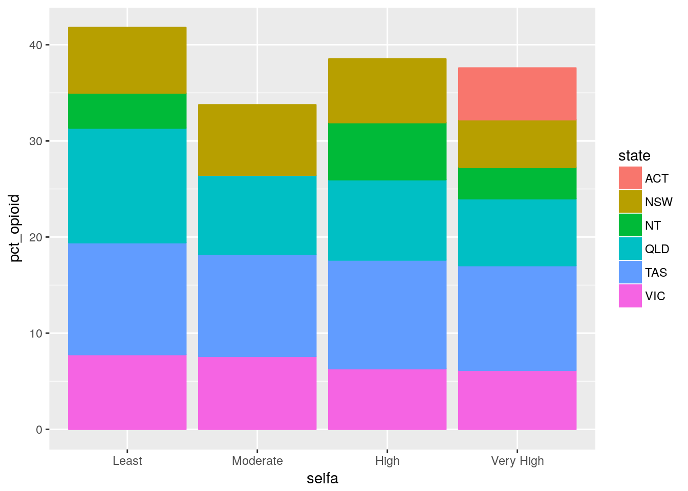
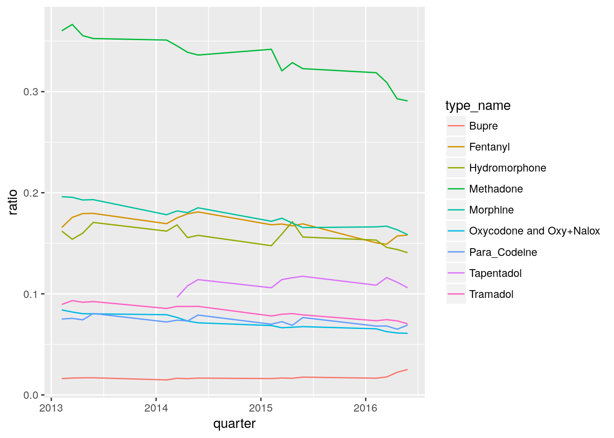

Benzo-opioid v2 analysis
Mofi Islam and Dennis Wollersheim
2018-04-30
Last updated: 2018-09-26
workflowr checks: (Click a bullet for more information)-
✔ R Markdown file: up-to-date
Great! Since the R Markdown file has been committed to the Git repository, you know the exact version of the code that produced these results.
-
✔ Environment: empty
Great job! The global environment was empty. Objects defined in the global environment can affect the analysis in your R Markdown file in unknown ways. For reproduciblity it’s best to always run the code in an empty environment.
-
✔ Seed:
set.seed(20180719)The command
set.seed(20180719)was run prior to running the code in the R Markdown file. Setting a seed ensures that any results that rely on randomness, e.g. subsampling or permutations, are reproducible. -
✔ Session information: recorded
Great job! Recording the operating system, R version, and package versions is critical for reproducibility.
-
Great! You are using Git for version control. Tracking code development and connecting the code version to the results is critical for reproducibility. The version displayed above was the version of the Git repository at the time these results were generated.✔ Repository version: 9570d4f
Note that you need to be careful to ensure that all relevant files for the analysis have been committed to Git prior to generating the results (you can usewflow_publishorwflow_git_commit). workflowr only checks the R Markdown file, but you know if there are other scripts or data files that it depends on. Below is the status of the Git repository when the results were generated:
Note that any generated files, e.g. HTML, png, CSS, etc., are not included in this status report because it is ok for generated content to have uncommitted changes.Ignored files: Ignored: data/cache/ Unstaged changes: Modified: analysis/analysis.Rmd Modified: lib/generate_data_frames.R
Expand here to see past versions:
| File | Version | Author | Date | Message |
|---|---|---|---|---|
| Rmd | 9570d4f | Dennis Wollersheim | 2018-09-26 | wflow_publish(“analysis/analysis.v2.Rmd”) |
Methods
The data is from the PBS prescribing data. In this dataset, we have every opioid and benzodiazepine prescription for a 10% sample of the population, made in the period 2013-2016. In a single prescription, we have a date of supply, a drug type and strength, and the number of pills. Using the WHO DDD drug classification, we determine the total DDD for each prescription, and then we estimate the end day of the prescription to be the start day + totalDDD.
t
We determine that We make the foloCondervative Assumptions
- we take all the people who have had benzo and opioid, and we intersect them
- for each prescription, we assume the following behaviour.
| Type | Treatment |
|---|---|
| Patches | Continuious usage for number of days reccomended for each patch |
| Injections | Continious usage at the adult daily reccomended dose |
| tablets | 2 tablets /day |
We estimate prescription comsumption window by assuming that the user takes the prescription daily from the time they fill their prescription until it runs out, given consumption factors the the table above, and the quantity of items in the prescription.
Using the consumption window calculated above, we deem someone is taking opioids concurrently with benzodiazepine if they have an opioid window overlapping with benzodiazepine window, with at least 7 days of overlap.
Dataset summary
There are more opioid prescriptions and users than Benzodiazepine users
Total Number of Scripts with either Benzo or Opioid
| state | n |
|---|---|
| ACT | 84 |
| NSW | 2760 |
| NT | 7 |
| QLD | 1622 |
| SA | 808 |
| TAS | 194 |
| VIC | 2450 |
| WA | 996 |
Total Number of People with either Benzo or Opioid
| state | n |
|---|---|
| ACT | 14 |
| NSW | 278 |
| NT | 3 |
| QLD | 216 |
| SA | 66 |
| TAS | 22 |
| VIC | 273 |
| WA | 96 |
Total Number of People with Opioid
[1] “people”
| state | n |
|---|---|
| ACT | 12 |
| NSW | 231 |
| NT | 2 |
| QLD | 189 |
| SA | 60 |
| TAS | 18 |
| VIC | 218 |
| WA | 87 |
Total Number of People with Benzo
[1] “people”
| state | n |
|---|---|
| ACT | 6 |
| NSW | 104 |
| NT | 1 |
| QLD | 83 |
| SA | 25 |
| TAS | 11 |
| VIC | 132 |
| WA | 36 |
Methods - find overlaps
Loading objects:
df_intersect
Loading objects:
df_intersect_0break prescriptions into 4 distinct usage types;
- opioid_dd - opioid with a benzodiazepine overlapping
- benzo_dd - benzodiazepine with an opioid overlapping
- opioid_alone - opioid with no overlap
- benzo_alone - benzodiazepine with no overlap
answer mofi’s questions
how many users, total and year wise, and cc users
how many benzo users total| n |
|---|
| 398 |
how many benzo users yearwise| supply_year | n |
|---|---|
| 2013 | 179 |
| 2014 | 184 |
| 2015 | 180 |
| 2016 | 183 |
how many opioid users total| n |
|---|
| 817 |
how many opioid users yearwise| supply_year | n |
|---|---|
| 2013 | 314 |
| 2014 | 341 |
| 2015 | 337 |
| 2016 | 343 |
how many CC users total | n |
|---|
| 36 |
| supply_year | n |
|---|---|
| 2013 | 14 |
| 2014 | 15 |
| 2015 | 19 |
| 2016 | 17 |
how many episodes of cc use
how many cc episodes| n |
|---|
| 1328 |
how many cc episodes yearwise| supply_year | n |
|---|---|
| 2013 | 56 |
| 2014 | 254 |
| 2015 | 452 |
| 2016 | 566 |
overlap amount exploraiton
average overlap for intersect 7| mean(diff) |
|---|
| 13.26355 days |
average overlap for intersect 1| mean(diff) |
|---|
| 7.55952 days |
Don't know how to automatically pick scale for object of type difftime. Defaulting to continuous.`stat_bin()` using `bins = 30`. Pick better value with `binwidth`.geographic variation
state variationWarning: Column `state` joining character vector and factor, coercing into character vector| state | n | population | pct |
|---|---|---|---|
| ACT | 14 | 390706 | 3.58e-05 |
| NSW | 278 | 7617684 | 3.65e-05 |
| NT | 3 | 240543 | 1.25e-05 |
| QLD | 216 | 4778854 | 4.52e-05 |
| SA | 66 | 2564031 | 2.57e-05 |
| TAS | 22 | 516586 | 4.26e-05 |
| VIC | 273 | 5937481 | 4.60e-05 |
| WA | 96 | 1698660 | 5.65e-05 |
seifa variationWarning: Column `lga` joining character vector and factor, coercing into character vector| seifa | n | population | pct |
|---|---|---|---|
| Least | 105 | 2281394 | 0.0046024 |
| Moderate | 163 | 3260638 | 0.0049990 |
| High | 312 | 6945123 | 0.0044924 |
| Very High | 381 | 8930384 | 0.0042663 |
urbanisation variationWarning: Column `lga` joining character vector and factor, coercing into character vector| urbanization | n | population | pct |
|---|---|---|---|
| Rural | 60 | 538851 | 0.0111348 |
| Urban | 901 | 20878688 | 0.0043154 |
urbanisation by state variationWarning: Column `lga` joining character vector and factor, coercing into character vector
Warning: Column `state` joining character vector and factor, coercing into character vector| state | urbanization | n | population | pct |
|---|---|---|---|---|
| ACT | Urban | 13 | 390706 | 0.0033273 |
| NSW | Rural | 22 | 177505 | 0.0123940 |
| NSW | Urban | 251 | 6728262 | 0.0037305 |
| NT | Rural | 1 | 23614 | 0.0042348 |
| NT | Urban | 2 | 117564 | 0.0017012 |
| QLD | Rural | 2 | 26561 | 0.0075298 |
| QLD | Urban | 214 | 4482610 | 0.0047740 |
| TAS | Rural | 4 | 37642 | 0.0106264 |
| TAS | Urban | 18 | 299546 | 0.0060091 |
| VIC | Rural | 16 | 140535 | 0.0113851 |
| VIC | Urban | 256 | 5542305 | 0.0046190 |
state by state variationWarning: Column `lga` joining character vector and factor, coercing into character vector
Warning: Column `state` joining character vector and factor, coercing into character vector
Joining, by = "pin"
Joining, by = "pin"
Joining, by = "pin"
Joining, by = "pin"
Joining, by = "pin"

what type of users do we have
number of users of each type, overall
Prescriptions that participate in double dipping


Percentage of population that participate in double dipping

Percentage of double dippers scripts for each Seifa areaJoining, by = "lga"| seifa | drug | ratio |
|---|---|---|
| Least | opioid_dd_ratio | 0.0000000 |
| Moderate | opioid_dd_ratio | 0.0673635 |
| High | opioid_dd_ratio | 0.1564516 |
| Very High | opioid_dd_ratio | 0.1361426 |
| Least | benzo_dd_ratio | 0.0000000 |
| Moderate | benzo_dd_ratio | 0.1712963 |
| High | benzo_dd_ratio | 0.3520518 |
| Very High | benzo_dd_ratio | 0.1021070 |
Percentage of double dippers scripts for each Urbanization areaJoining, by = "lga"| urbanization | drug | ratio |
|---|---|---|
| Rural | opioid_dd_ratio | 0.0054945 |
| Urban | opioid_dd_ratio | 0.1217669 |
| Rural | benzo_dd_ratio | 0.0104167 |
| Urban | benzo_dd_ratio | 0.1839888 |
Percentage of double dippers scripts for each drug type | type_name | ratio |
|---|---|
| Bupre | 0.0104603 |
| Fentanyl | 0.1854839 |
| Hydromorphone | 0.1428571 |
| Methadone | 0.0000000 |
| Morphine | 0.3064220 |
| Oxycodone and Oxy+Nalox | 0.0951318 |
| Para_Codeine | 0.0481356 |
| Tapentadol | 0.0000000 |
| Tramadol | 0.0310142 |
Percentage of double dippers scripts for each drug type 
Ratio of double dippers scripts for each state| state | drug | ratio |
|---|---|---|
| ACT | opioid_dd_ratio | 0.0000000 |
| NSW | opioid_dd_ratio | 0.1523400 |
| NT | opioid_dd_ratio | 0.0000000 |
| QLD | opioid_dd_ratio | 0.0562448 |
| SA | opioid_dd_ratio | 0.0877598 |
| TAS | opioid_dd_ratio | 0.0163934 |
| VIC | opioid_dd_ratio | 0.0649518 |
| WA | opioid_dd_ratio | 0.0157576 |
| ACT | benzo_dd_ratio | 0.0000000 |
| NSW | benzo_dd_ratio | 0.2867868 |
| NT | benzo_dd_ratio | 0.0000000 |
| QLD | benzo_dd_ratio | 0.1113801 |
| SA | benzo_dd_ratio | 0.1440000 |
| TAS | benzo_dd_ratio | 0.0277778 |
| VIC | benzo_dd_ratio | 0.0804469 |
| WA | benzo_dd_ratio | 0.0760234 |
| # DDD |
Warning: Ignoring unknown aesthetics: zWarning: Column `LGA_CODE11`/`lga` joining factor and character vector, coercing into character vectorLinking to GEOS 3.5.1, GDAL 2.2.1, proj.4 4.9.3Warning: Ignoring unknown aesthetics: z[1] "#B66D68FF" "#6B7598FF" "#958600FF" "#6C7A51FF" "#7D687DFF" "#A06CABFF"Warning in tm_format_World(): tm_format_World is deprecated as of tmap version 2.0. Please use tm_format("World", ...) insteadWarning in tm_style_cobalt(): tm_style_white is deprecated as of tmap version 2.0. Please use tm_style("cobalt", ...) insteadNote that tm_style("cobalt") resets all options set with tm_layout, tm_view, tm_format, or tm_legend. It is therefore recommended to place the tm_style element prior to the other tm_layout/tm_view/tm_format/tm_legend elements.
Warning: Package `gridGraphics` is required to handle base-R plots. Substituting empty plot.
Session information
R version 3.4.4 (2018-03-15)
Platform: x86_64-pc-linux-gnu (64-bit)
Running under: Ubuntu 17.10
Matrix products: default
BLAS: /usr/lib/x86_64-linux-gnu/openblas/libblas.so.3
LAPACK: /usr/lib/x86_64-linux-gnu/libopenblasp-r0.2.20.so
locale:
[1] LC_CTYPE=en_AU.UTF-8 LC_NUMERIC=C LC_TIME=en_AU.UTF-8 LC_COLLATE=en_AU.UTF-8 LC_MONETARY=en_AU.UTF-8 LC_MESSAGES=en_AU.UTF-8 LC_PAPER=en_AU.UTF-8
[8] LC_NAME=C LC_ADDRESS=C LC_TELEPHONE=C LC_MEASUREMENT=en_AU.UTF-8 LC_IDENTIFICATION=C
attached base packages:
[1] grid stats4 parallel stats graphics grDevices utils datasets methods base
other attached packages:
[1] ggpubr_0.1.7 sf_0.6-3 bindrcpp_0.2.2 keyring_1.1.0 RPostgreSQL_0.6-2 DBI_1.0.0 tricolore_1.0.3 ggtern_2.2.1
[9] tmaptools_2.0 tmap_2.0 forcats_0.3.0 dplyr_0.7.6 purrr_0.2.5 readr_1.1.1 tidyr_0.8.1 tibble_1.4.2
[17] ggplot2_2.2.1 tidyverse_1.2.1 multidplyr_0.0.0.9000 IRanges_2.12.0 S4Vectors_0.16.0 BiocGenerics_0.24.0 fuzzyjoin_0.1.4 DataCache_0.9
[25] wrapr_1.5.1 readstata13_0.9.2 lubridate_1.7.4 knitr_1.20 stringr_1.3.1 magrittr_1.5 workflowr_1.1.1 nvimcom_0.9-75
loaded via a namespace (and not attached):
[1] readxl_1.1.0 backports_1.1.2 lwgeom_0.1-4 plyr_1.8.4 lazyeval_0.2.1 sp_1.3-1 jqr_1.0.0 crosstalk_1.0.0 leaflet_2.0.1
[10] geojsonlint_0.2.0 digest_0.6.15 foreach_1.4.4 htmltools_0.3.6 modelr_0.1.2 bayesm_3.1-0.1 R.utils_2.6.0 colorspace_1.3-2 rvest_0.3.2
[19] jsonvalidate_1.0.0 haven_1.1.2 rgdal_1.3-3 crayon_1.3.4 jsonlite_1.5 bindr_0.1.1 iterators_1.0.10 glue_1.3.0 gtable_0.2.0
[28] webshot_0.5.0 compositions_1.40-2 V8_1.5 DEoptimR_1.0-8 scales_0.5.0 Rcpp_0.12.18 viridisLite_0.3.0 xtable_1.8-2 spData_0.2.9.0
[37] units_0.6-0 foreign_0.8-70 latex2exp_0.4.0 htmlwidgets_1.2 httr_1.3.1 RColorBrewer_1.1-2 pkgconfig_2.0.1 XML_3.98-1.12 R.methodsS3_1.7.1
[46] tidyselect_0.2.4 labeling_0.3 rlang_0.2.2 later_0.7.3 munsell_0.5.0 cellranger_1.1.0 tools_3.4.4 cli_1.0.0 broom_0.5.0
[55] evaluate_0.10.1 yaml_2.1.19 robustbase_0.93-1.1 satellite_1.0.1 nlme_3.1-137 whisker_0.3-2 mime_0.5 R.oo_1.22.0 xml2_1.2.0
[64] rmapshaper_0.4.0 compiler_3.4.4 rstudioapi_0.7 curl_3.2 png_0.1-7 e1071_1.6-8 stringi_1.2.3 highr_0.7 rgeos_0.3-28
[73] lattice_0.20-35 classInt_0.2-3 tensorA_0.36.1 pillar_1.3.0 cowplot_0.9.3 maptools_0.9-2 geojsonio_0.6.0 raster_2.6-7 mapview_2.4.0
[82] httpuv_1.4.5 R6_2.2.2 promises_1.0.1 KernSmooth_2.23-15 gridExtra_2.3 codetools_0.2-15 gdalUtils_2.0.1.14 dichromat_2.0-0 boot_1.3-20
[91] energy_1.7-4 MASS_7.3-50 assertthat_0.2.0 proto_1.0.0 rprojroot_1.3-2 geojson_0.2.0 hms_0.4.2 class_7.3-14 rmarkdown_1.10
[100] git2r_0.23.0 shiny_1.1.0 base64enc_0.1-3 This reproducible R Markdown analysis was created with workflowr 1.1.1